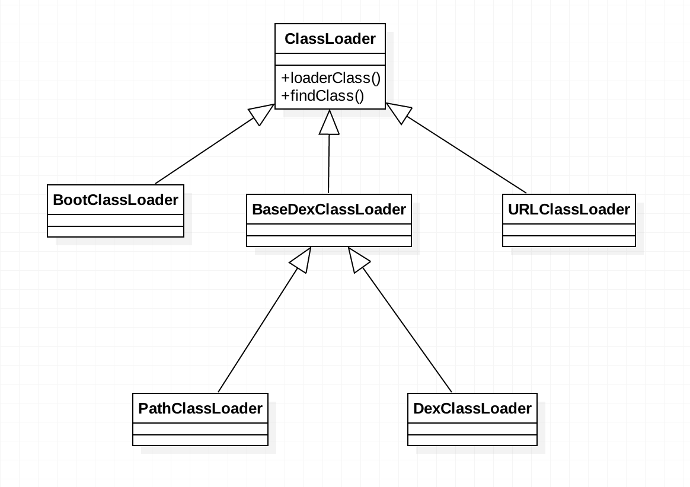
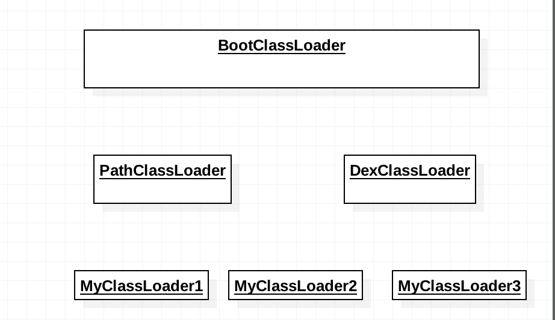

知识总结之 插件化基础ClassLoader
安卓插件化技术已经作为一个优秀的合格研发必备要求，学习和掌握现有不同种类动态加载方案 是提升个人技术深度有效途径。

插件化基础 ClassLoader
ClassLoader是什么？
ClassLoader 是将java编译后的字节码加载到虚拟机内存中的用到工具类。
Android平台虚拟机Dalvik/ART可以运行的字节码为.dex文件，Java平台JVM虚拟机可以被加载的字节码为.class文件。针对Android平台，若我们用ClassLoader加载指定地方的.dex，并且可以扩展ClassLoader实现定制加载器，就可以实现动态加载代码的目的。
dex文件也是由jar转化而来，android提供了转化命令：
|
|
ClassLoader实例
Java虚拟机中类加载器：
系统默认三个主要的类加载器，每个类负责加载特定位置的类：
BootStrap,ExtClassLoader,AppClassLoader
- BootStrap 引导类加载器，用来加载java核心库（jre/lib/rt.jar），并非继承ClassLoader，C代码实现。
- ExtClassLoader 扩展类加载器，用来加载java扩展库中的类（jre／lib／ext／*.jar）。
- AppClassLoader 系统类加载器，根据类路径（ClassPath）来加载java类，java应用层类都是该类加载。
用IntelliJ 创建java虚拟机代码
|
|
打印信息中，可以看到加载器类的层级关系。
|
|
安卓虚拟机Dalvik/ART类加载器

安卓平台虚拟机的类加载器实例和java不同，但都是继承自ClassLoader的。
BootClassLoader
和java虚拟机中不同的是BootClassLoader是ClassLoader内部类,由java代码实现而不是c++实现,是Android平台上所有ClassLoader的最终parent,这个内部类是包内可见,所以我们没法使用。URLClassLoader
只能用于加载jar文件，但是由于 dalvik 不能直接识别jar，所以在 Android 中无法使用这个加载器。BaseDexClassLoader
PathClassLoader和DexClassLoader都继承自BaseDexClassLoader,其中的主要逻辑都是在BaseDexClassLoader完成的。这些源码在java/dalvik/system中。DexClassLoader
DexClassLoader支持加载APK、DEX和JAR，也可以从SD卡进行加载。动态加载主要用到了该类特性，来动态加载不同类型压缩包里的或这直接dex文件代码。PathClassLoader
1234567891011121314151617181920public class PathClassLoader extends BaseDexClassLoader {public PathClassLoader(String dexPath, ClassLoader parent) {super(dexPath, null, null, parent);}public PathClassLoader(String dexPath, String libraryPath,ClassLoader parent) {super(dexPath, null, libraryPath, parent);}private static DexFile loadDexFile(File file, File optimizedDirectory)throws IOException {if (optimizedDirectory == null) {return new DexFile(file);} else {String optimizedPath = optimizedPathFor(file, optimizedDirectory);return DexFile.loadDex(file.getPath(), optimizedPath, 0);}}}
由于构造参数optimizedDirectory指定为null，会直接使用dex文件原有的路径来创建DexFile对象。也就是说在dalvik虚假机上PathClassLoader无法加载外部的动态代码。
类加载过程分析
JVM中ClassLoader通过defineClass方法加载jar里面的Class，而Android平台中这个方法被弃用了。取而代之的是loadClass方法。
|
|
分析loadClass
|
|
loadClass代码分析可以看出，加载前会看缓存中是否已经加载，没有加载则委托为parent，如果parent没有加载到，这child加载器开始findClass加载。这种加载方式被称为双亲代理模型加载。
特点：如果一个类被位于树根的ClassLoader加载过，那么在以后整个系统的生命周期内，这个类永远不会被重新加载。共享功能，一些Framework层级的类一旦被顶层的ClassLoader加载过就缓存在内存里面，以后任何地方用到都不需要重新加载。
除此之外还有隔离功能，不同继承路线上的ClassLoader加载的类肯定不是同一个类，这样的限制避免了用户自己的代码冒充核心类库的类访问核心类库包可见成员的情况。

层级关系中父类没有加载到时，子类开始findClass
|
|
可以看出，BaseDexClassLoader中有个pathList对象，pathList中包含一个DexFile的数组dexElements,热修复原理也是修改该数组加载顺序来实现，dexPath传入的原始dex(.apk,.zip,.jar等)文件在optimizedDirectory文件夹中生成相应的优化后的odex文件，dexElements数组就是这些odex文件的集合，如果不分包一般这个数组只有一个Element元素，也就只有一个DexFile文件，而对于类加载呢，就是遍历这个集合，通过DexFile去寻找。最终调用native方法的defineClass。
扩展ClassLoader实现定制化
可以重载loadClass方法并改写类的加载逻辑，我们可以通过重写loadClass方法避开双亲代理的框架，这样一来就可以在重新加载已经加载过的类，也可以在加载类的时候注入一些代码。
安卓平台特有组件（activity，service等）的加载是否可以直接加载呢？答案肯定是否的，这些组件都是需要在清单文件中注册，然后才会被系统反射加载，并基于回调给予组件生命周期。
那我们想要加载一个安卓特有组件时，需要解决生命周期管理问题，才能正确的被系统调起来。
——————
欢迎转载，请标明出处：常兴E站 www.canking.win